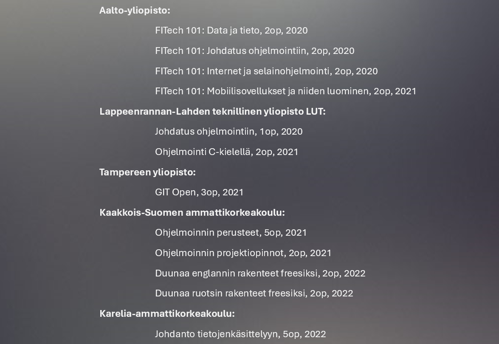
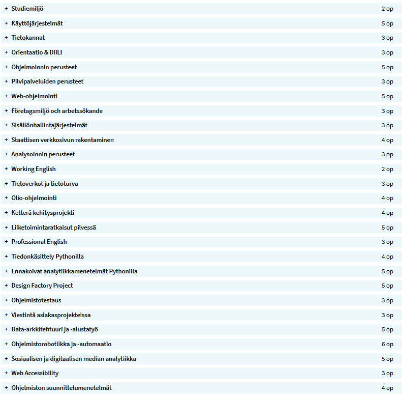
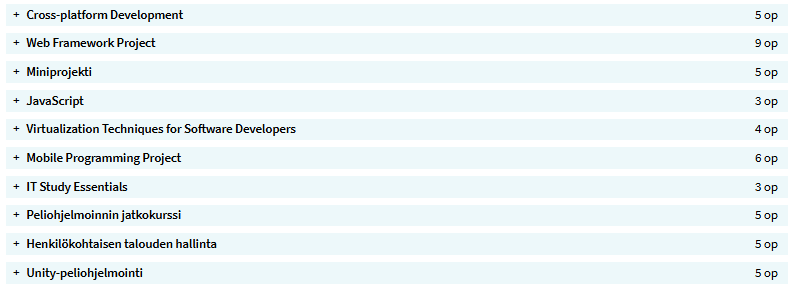

Microsoft M365:
- Sharepoint
- Planner
- Clipchamp
- Power Automate
- Power BI
- Power Pivot
- Word
- Excel
- PowerPoint
- Forms
- Yammer
- Teams
- Outlook
Alunperin olen Lapista, Ivalosta, mutta asustelen nykyään perheeni kanssa Suomussalmella Kainuussa. Koulutukseltani olen ajoneuvoasentaja, ja tulossa oleva koulutusnimike olisi sitten Tietojenkäsittelyn Tradenomi. Työskentelen tällä hetkellä vastaavana laitosmiehenä Yageo Kemet Electronicsilla Suomussalmella. Tulevaisuudessa toivon löytäväni itseni uudesta ammatista koodarina.
Koodaus löytyi elämääni nykyisellä työpaikallani, jossa pääsin seuraamaan "vanhan konkarin"
koodausta. Tuo mahtava ihminen jaksoi vastata loputtomiin kysymyksiini aiheesta ja otti minut
mukaan ratkaisemaan koodin sisältöä.
Pidin heti alkuun siitä, miten asioita tulee pohtia ja miten looginen ajattelu sekä
ongelmanratkaisukyky ovat koodauksessa avainasemassa. Tästä innostuneena otin kursseja joita oli
avoimesti saatavilla.
No, eihän se innostus siitä suinkaan laantunut, vaan kasvoi kasvamistaan tajutessani miten
koodaus tuntuu enemmän ja enemmän omalta jutulta. Kursseja käytyäni en oikein tiennyt miten
tulisi jatkaa oppiakseni lisää.
Niinpä lopulta uskaltauduin pääsykokeisiin että josko sitä vaikka pääsisi opiskelemaan alaa. Ja
niinhän siinä kävi; nyt on opinnot Hämeen Ammattikorkeakoulun tietojenkäsittelyn
tradenomi-linjalla menossa.
Teoriat on suoritettu jouluun 2024 mennessä. Toki myönnän, että rankkaa on ollut kun tekee
täysipäiväisesti töitä samaan aikaan. Mutta koska tämä on niin mielenkiintoista ja saa oppia
uusia asioita, niin tämähän menee harrastuksesta!
Harjoituspaikan ja työpaikan haku on koko ajan päällä, kuten myös opinnäytetyöhön tarvittava
yhteistyökumppani. (Vink vink, yläpalkissa luuhaa LinkedIn logo, josta voi vaikka yhteyttä
ottaa, jos löytyisi jotain sopivaa..)
Tässä sivussa suunnitelmissa vapaa-ajalla olisi
syventää
osaamista.
Ensimmäisenä tulee mieleen
että voisi viimein tehdä tämän portfolion uusiksi alusta pitäen itse. Nyt kun voisi olettaa,
että
aikaa on enemmän teoriaopintojen päätyttyä. Olen suunnitellut
käyttäväni React-Nativea, koska haluan samalla testata myös miten taiteillaan mobiilista
helposti web-versio. Lisänä voisin sivussa opetella Typescriptiä, se kun kuulosti rekrymessun
keskustelujen mukaan olevan pian halutumpi osaamisalue kuin JavaScript.
Tavoitteena tässä kaikessa on koko ajan ollut uuden oppimisen lisäksi
työllistyä alalle, jossa on paljon mielenkiintoisia asioita ja aina saa opetella uutta!
Peruskoulun jälkeen olen valmistunut Ylioppilaaksi Ivalon Lukiosta vuonna 2003. Tämän jälkeen opiskelin ajoneuvoasentajaksi Kainuun Ammattiopistossa Suomussalmella josta valmistuin 2006. Pian valmistumisen jälkeen sain töitä paikallisessa kondensaattoritehtaassa, jossa olen työskennellyt vakituisesti jo 18 vuotta. Suurimman osan ajasta tehtaalla olen ollut laitosmiehenä.
Kun kiinnostus ohjelmointiin heräsi, sattui jonkun ajan päästä tutkiskelun kannalta hyvä asia. (Ja huom! Muulta kannalta katsottuna tämä ei ollut hyvä asia..) Tuli korona, jonka takia moni opinahjo avasi paljon avoimia kursseja kenelle tahansa, eli mahdollisuus tutustua ohjelmointiin omatoimisesti oli saatavilla. Käytin tämän tilaisuuden hyödykseni ja alla on lueteltuna kursseja jotka suoritin itsenäisesti.
Meneillään olevissa opinnoissani olen edennyt teoriassa ihan loppusuoralle. Alla olevissa kuvissa on listattuna nykyisten opintojeni suoritukset tähän päivään asti (10.12.2024). Viimeiset moduulit on menossa, enää pari tehtävää palauttamatta. Sitten lista täydentyy Kyberturvallisuudella, Hyökkäyksillä ja puolustusmenetelmillä sekä Auditoinnilla ja penetraatiotestauksella.
 Kaikkea en ole tähän listannut, mutta yritin tehdä mahdollisimman kattavaa listaa. Osaa on käytetty enemmän kuin toisia ja osaa on raapaistu enemmänkin pintapuolisesti.
Microsoft M365:
Koodausta
Tietokantaa, automatisointia, suunnittelua, tiimityötä:
Sekalaista ja lajittelematonta: